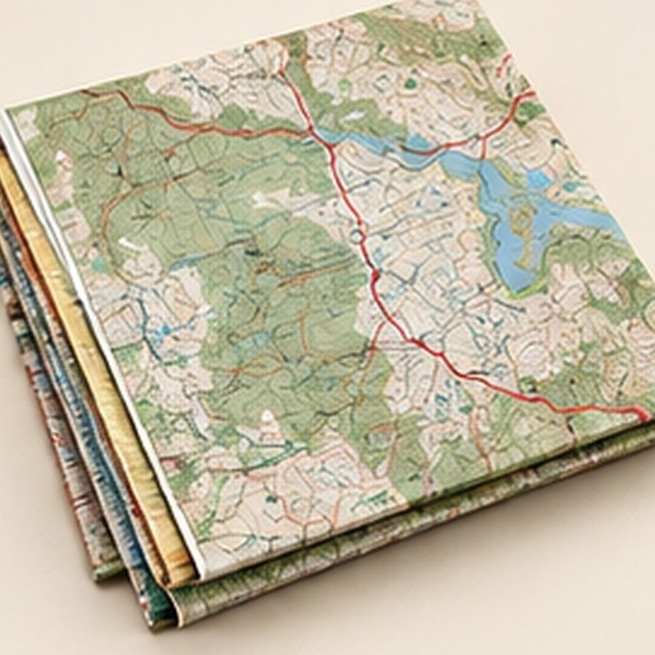

A NOTE FROM NORTE
Every route starts
with curiosity.
NORTE is a cartography and adventure storefront concept built around the small things that make a journey feel more considered: a map you can read, a compass you understand, a pack that keeps essentials close, and a plan flexible enough to leave room for discovery.
We believe in practical gear, clear information, and respect for the places we explore.
A little more about us ↗